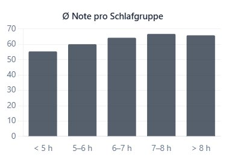
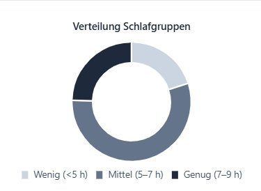

Handlungsziel 4
Datenvisualisierung
Daten zielgruppengerecht und korrekt visualisieren.
Artefakt
Vier Diagramme, die den Datensatz aus unterschiedlichen Blickwinkeln zeigen — jedes beantwortet eine konkrete Frage.




Erklärung
Histogramm zeigt die Form der Schlafverteilung, das Balkendiagramm vergleicht Notendurchschnitte zwischen Schlafgruppen, das Liniendiagramm verdeutlicht den Trend, das Doughnut die Anteile. Jeder Diagrammtyp passt zur Frage, die er beantwortet.
Reflexion
Mein erster Entwurf hatte sechs bunte Diagramme auf einer Seite. Das Reduzieren auf «eine Frage pro Diagramm» war meine eigentliche Lernkurve in HZ 4.